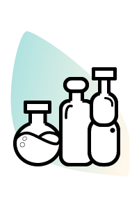
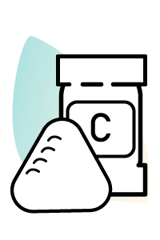
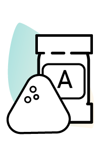
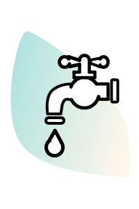

Quienes somos:
“Somos un grupo de amigos muy entusiastas que decidimos empezar un proyecto, el cual se convirtió en una cooperativa y fábrica. Junto con la ayuda del gobierno de Jujuy, producimos ladrillos sustentables, ayudamos al medio ambiente y aquellos que desean dar sus primeros pasos para construir sus hogares, en cada uno de los ladrillos que creamos tienen como ingredientes principales plástico, dedicación, ecología y un mejor futuro para todos”.
¿Qué son los ladrillos sustentables?
Son aquellos cuya forma y proceso de producción se asemeja a los ladrillos tradicionales pero, en este caso, están compuestos en su mayoría por plástico triturado. Utilizamos plástico reciclado, una mezcla de partículas de plástico "PET" (procedente de envases descartables de bebidas) y plástico PEAD (polietileno de alta densidad). Es el que se encuentra en los envases, etiquetas, artículos del hogar, juguetes, tapas de botella de bebida, entre otros.
¿Dónde se producen?
Actualmente nuestra fábrica se encuentra ubicada en el barrio Azopardo de la Ciudad de San Salvador, Departamento Belgrano, provincia de Jujuy.
La importancia de reciclar:
En la Argentina se estima que cada año tiramos a la basura 13 millones de toneladas de plástico, una cantidad suficiente para construir cada día un edificio de 57 pisos, como las torres Le Parc.
Hay muchos motivos por el cual es bueno reciclar el plástico pero el principal es porque sus residuos tardan entre 100 y 1.000 años en degradarse. El carbón y el plástico del que esté fabricado no se disuelve. Además, si reciclamos el plástico, estaremos consumiendo menos cantidades de materias primas y de recursos naturales y energéticos no renovables. Así evitamos que estos se agoten.
El plástico supone más del 12% de la cantidad de residuos sólidos urbanos. Y su acumulación supone un grave problema para el planeta. Y si utilizamos productos reciclados disminuye el consumo de energía. Eso se traduce en menos emisiones de CO2 a la atmósfera. Cada kilo de plástico reciclado supone que se deja de expeler 1,5 kg de CO2. Así contribuimos a reducir el efecto invernadero.
Proceso de Creación:
¿Cómo es la fábrica?
La fábrica es un galpón que contiene distintos tipos de maquinarias y secciones para poder realizar los procesos de producción correspondientes, trabajamos 25 personas actualmente en esta cooperativa.
Materiales que se emplean:
-
 Plástico triturado
-
 Cemento
-
 Arena
-
 Agua
Proceso de producción:
La primera etapa se llama proceso de selección, una vez que la cooperativa recolecta todas las botellas de los distintos puestos de entrega, se debe separar el plástico que sirve y del que no sirve.
Luego empieza el proceso de limpieza, donde se limpia el plástico seleccionado. A veces las botellas aún contienen líquidos y debemos estar seguros de que el material se encuentre seco y solamente contenga plástico para poder realizar bien todo el proceso de elaboración.
Una vez seleccionado y limpio el elemento, se tritura todo el plástico en una máquina llamada “Molino triturador”, donde se coloca botella por botella y se obtiene de la máquina pedacitos de plástico del tamaño de la arena. Y es entonces cuando tenemos como resultado nuestra “Materia Prima”.
Luego se mezcla ese plástico triturado en una máquina hormigonera común, esta mezcla se realiza con cemento, arena y agua en distintas proporciones hasta que queda una pasta homogénea, la cual emplearemos para realizar los ladrillos.
El siguiente paso es verter la mezcla dentro de una máquina moldeadora adaptada, donde se coloca esta pasta debajo en un rectángulo de madera como base y se utiliza la técnica de la compresión y presión para hacer los ladrillos, los moldes de ladrillos presionan la pasta hasta compactarla.
Una vez que la máquina moldeadora logró formar los ladrillos con sus respectivas medidas, se debe hacer el proceso de curación, donde se los deja secar por 24 horas. Pasado ese tiempo ya estarían listos para copiar y usar en la construcción de los nuevos hogares.
¿A quienes queremos ayudar?
Junto con el Gobierno Provincial de Jujuy, tomamos la iniciativa de iniciar un proyecto en el cual ayudamos a las familias carenciadas a cumplir el sueño de tener un hogar, con las condiciones óptimas que debe poseer una vivienda, todos los ambientes e instalaciones, mejorando la calidad de vida de diferentes familias jujeñas, brindándoles la oportunidad de seguir creciendo.
Testimonios:


Se parte de nuestro proyecto:
Ahora que conoces todo nuestro proyecto, junto con el Gobierno de la Provincia de Jujuy, queremos invitarte a formar parte de esta hermosa comunidad, transformemos esas botellas que consideras basura, en la materia prima para ayudar a muchas familias de nuestra ciudad, juntos podemos hacer que Jujuy crezca, que los jujeños puedan tener nuevas oportunidades y ayudarlos a progresar.
¿Cómo podes ayudar?
Separá de tu basura, todas las botellas que desees reciclar, si aún contienen líquido, por favor retiralo y vacialas de cualquier contenido. Si las botellas tienen etiqueta y tapa, déjalas, eso también suma al proceso de reciclaje. Necesitamos más de 20 botellas de 2 litros para poder realizar un ladrillo, es decir que estaríamos reutilizando un montón de plástico en nuestro proyecto.
Una vez separadas, ¿A dónde debes ir?
Tenemos distintos puntos de entrega, cercanos a las escuelas públicas de las ciudades, donde podes encontrar grandes contenedores.